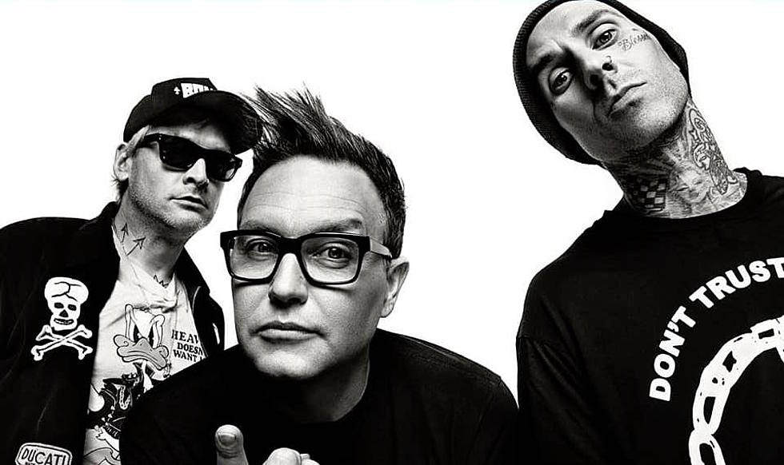

My Main Hobbies
Gaming
My favorite things to do in my free time is to playing video games more so fighting games.

Drawing
I enjoy drawing a bit as well,although I don't draw as much nowadays, it was something I did a lot in highschool. What got me into drawing was a friend of mine from middle school who was really good at it.
\Music
aslo like to listen to music in my downtime as well the main genres I listen to are rap, pop punk or punk rock in general, alt rock, etc.
My Life The Past Few Years
Honestly my life has surprised with the direction it's gone into from getting baptised and joining a really awesome church family to getting engaged and soon to be married in a year. I never saw myself doing much in life especially not going to college even if I didnt do that great and even being in a relationship that will actually stay strong and last. Its all thanks to God and the people he's put in my life to keep me on the right track. Now I'm learning how to code and may possibly end up finding a better job than I could ever expect to find.